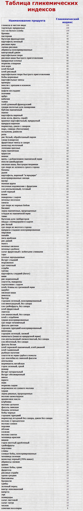

100 Дневный воркаут
<==== Вернуться к оглавлению
День 12. Гликемический индекс продуктов
Всем бодрого дня! Продолжая тему питания, я думаю что стоит рассказать о такой штуке, как
гликемический индекс
. Это очень интересный показатель, который объясняет, почему при одном и том же количестве калорий, плитка шоколадки будет отличаться от миски овсяной каши, и несмотря на некоторую "научность" этого словосочетания, постараюсь сделать инфо-пост максимально простым и доступным =) Но если сегодняшний инфо-пост покажется вам сложноватым, обязательно напишите об этом в комментариях!
Гликемический индекс
Гликемический индекс (англ. glycemic (glycaemic) index, сокращённо GI) — показатель влияния продуктов питания на уровень сахара в крови после их употребления. За точку отсчета взята реакция организма на чистую глюкозу, индекс которой равен 100.
Наверняка уже на этом моменте у вас возникнет резонный вопрос - зачем я решил рассказать вам об этом? Потому что гликемический индекс - это показатель того, как быстро усваивается тот или иной продукт. Если у продукта низкий гликемический индекс (55 или ниже), то при его употреблении уровень сахара в крови поднимается медленно, а если высокий (70 или выше) - то, соответственно, быстро. Именно гликемический индекс отвечает на вопрос, почему при одинаковой калорийности плитки шоколада и порции каши, после шоколадки очень скоро снова захочется кушать, а после каши кушать захочется нескоро.
Представьте ваш организм в виде парового котла в поезде с паровым котлом. Чтобы поезд ехал в котел нужно закидывать поленья. Поленья бывают разные, большие и маленькие, сухие и мокрые, ещё разные породы деревьев бывают (качественные и не такие качественные). Хорошие поленья будут гореть долго и поддерживать движение поезда, а плохие быстро прогорают и их постоянно нужно подбрасывать в топку. Тоже самое с простыми углеводами и сложными. Сложные будут дольше усваиваться вашим организмом и обеспечивать ему равномерную подпитку в течение дня, в то время как простые вызовут резкий всплекс уровня сахара в крови, а затем снова нужно будет чем-то "заправляться".
Но это ещё не всё. Быстрые углеводы, насыщая кровь излишним количеством сахара, приводят к тому, что организм выделяет большое количество инсулина, который выводит излишки в подкожный жир. В итоге жира стало больше, а питательных веществ организм особо не получил. Более того, при повышении уровня инсулина, организм, фактически, переходит в состояние "накопления", в котором практически нереально "сжигать" жир.
Конечно всё далеко не так однозначно, как может показаться на первый взгляд. В большинстве ситуаций вам действительно следует делать выбор в пользу продуктов с низким гликемическим индексом, но бывают и обратные случаи. Например, когда вам необходимо быстро восстановить силы, или зарядиться перед грядущей тренировкой. Но это уже тема продвинутого уровня (и вы можете самостоятельно найти информацию по этому вопросу в интернете ;)), а сейчас ограничимся тем, что я уже написал выше.
Гликемический индекс продукта зависит от нескольких факторов — вида углеводов и количества клетчатки, которые он содержит, способа термической обработки, содержания белков и жиров:
Вид углеводов
- простые (быстрые) углеводы обладают высоким гликемическим индексом, сложные (медленные) - низким.
Количество клетчатки, которое содержится в продукте
- чем ее больше, тем ниже гликемический индекс
Cпособ обработки продукта
- так после тепловой обработки, как правило, гликемический индекс возрастает
Содержание белков и жиров
- чем их больше, тем ниже гликемический индекс
Почему стоит кушать продукты с низким гликемическим индексом?
* Позволяют контролировать уровень сахара в крови
* Позволяют дольше сохранять чувство сытости после приёма пищи
* Понижают уровень плохого холестирина (ЛПНП)
* Повышают уровень хорошего холестирина (ЛПВП)
* Снижают вероятность заболевания диабетом 2-го типа
* Снижают вероятность развития сердечнососудистых заболеваний
* Снижают вероятность развития некоторых видов рака
* Снижают вероятность развития некоторых видов заболеваний глаз
* Улучшают состояние скожи
* Улучшают общефизическое самочувствие
* Повышают производительность
(* По данным Glycemic Index Foundation)
5 фактов, которые нужно знать о ГИ
Гликемический индекс можно посчитать только для продуктов, богатых углеводами.
Практически невозможно посчитать ГИ для тех продуктов, где очень мало углеводов, поэтому для мяса, рыбы, птицы, яиц, сыра, орехов, масла, и большинства овощей ГИ не считается.
В разных источниках гликемический индекс одних и тех же продуктов может указываться различным.
Разные способы выращивания и обработки продуктов, разные способы приготовления, состояние продукта и разные способы измерения - все это может повлиять на величину ГИ.
Гликемический индекс не единственный индикатор полезности продуктов.
Поэтому не стоит ориентироваться только на него. Например есть такая прекрасная вещь, как картошка, которая несмотря на высокий ГИ богата различными полезными нутриентами. В тоже время есть такая не очень прекрасная вещь, как выпечка, которая несмотря на низкий ГИ богата жирами (чаще всего насыщенными). Поэтому помимо величины ГИ следует так же учитывать и другие составляющие ;)
Не нужно бояться еды с высоким ГИ.
Как я уже писал выше, ГИ не единственный показатель, на который нужно ориентироваться, поэтому вы вполне можете включать в свои рационы продукты с высоким ГИ, ваша задача, чтобы в целом гликемический индекс потребляемых продуктов был низким.
Не нужно пытаться считать ГИ каждый день.
Во-первых, это очень утомительно (даже утомительнее, чем калории). Во-вторых, я уже писал выше, что с помощью различных способов можно влиять на величину ГИ. Поэтому просто следуйте разделению продуктов на высокий, средний и низкий ГИ и старайтесь составлять свою диету в основном из продуктов третьей категории.
Таблица продуктов
В интернете можно найти множество различных таблиц с указанием гликемических индексов основных продуктов питания, составляющих рацион большинства людей. Часто у одних и тех же продуктов в этих таблицах будут разные индексы (выше мы уже объяснили почему это происходит), поэтому важнее смотреть не на абсолютное значение ГИ, а на относительные значения ГИ продуктов друг к другу. Для примере приводим вот такую таблицу:

======> День 13. Пятнашки: здоровое питание